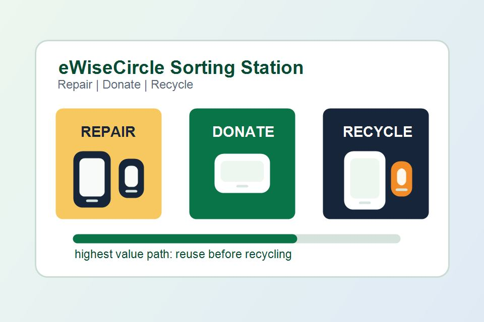
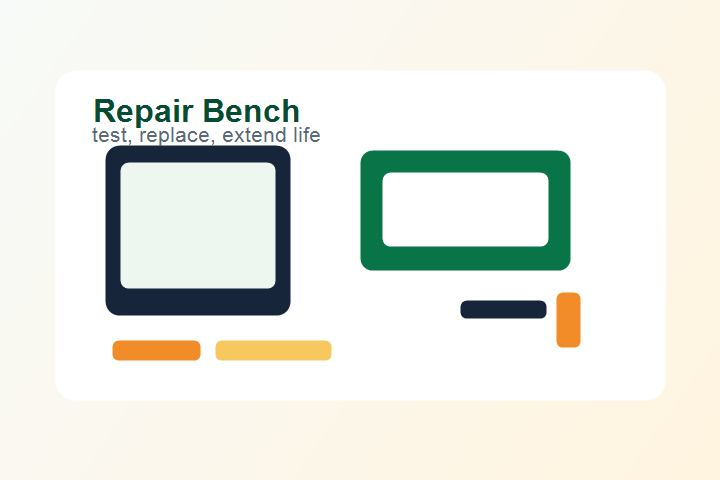

Household e-waste help for busy families
Make smarter choices with every old device.
eWiseCircle helps you decide whether to repair, donate, or recycle electronics before they become clutter or landfill waste.

What eWiseCircle does
Three responsible paths for electronics
Choose the action that gives a device its highest remaining value while keeping data, batteries, and metals out of unsafe disposal streams.
Impact estimator
Estimate the benefit of taking action
Use the calculator to see how one small choice can recover materials and avoid emissions. Your last estimate is saved on this device.

Why it matters
Most devices deserve a second look.
Phones, laptops, tablets, and monitors contain metals, batteries, glass, and plastic that require careful handling. eWiseCircle guides households toward repair first, donation when a device still works, and certified recycling when it has reached the end of its life.
- Protect personal data before handoff.
- Find the safest action for batteries and damaged screens.
- Support local schools, refurbishers, and collection events.